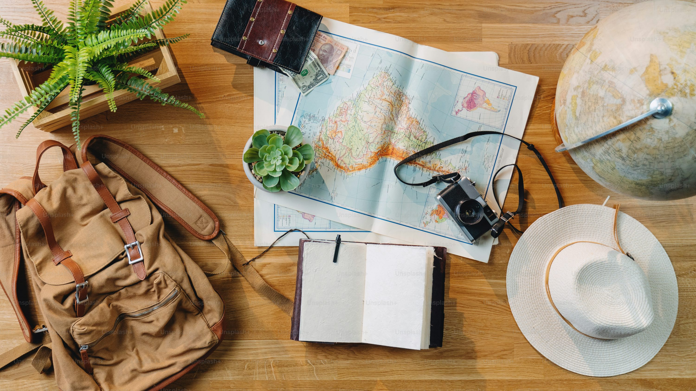

Partagez Votre Projet de Voyage
Chez Landscape, nous sommes passionnés par la création d’expériences de voyage sur mesure. Nous croyons que chaque voyage commence par un projet. Que vous planifiez une escapade d'un week-end, un road trip à travers l'Europe ou une aventure en Asie, nous sommes là pour vous aider à concrétiser vos rêves.
Comment ça fonctionne : Partagez vos idées, vos envies et vos attentes avec nous. Nous travaillons main dans la main avec vous pour élaborer un itinéraire qui correspond parfaitement à vos souhaits. Nos conseillers en voyage expérimentés vous apporteront leurs recommandations pour enrichir votre projet.